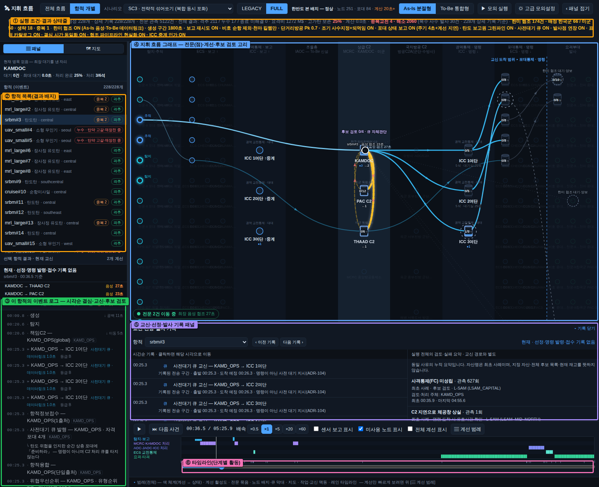
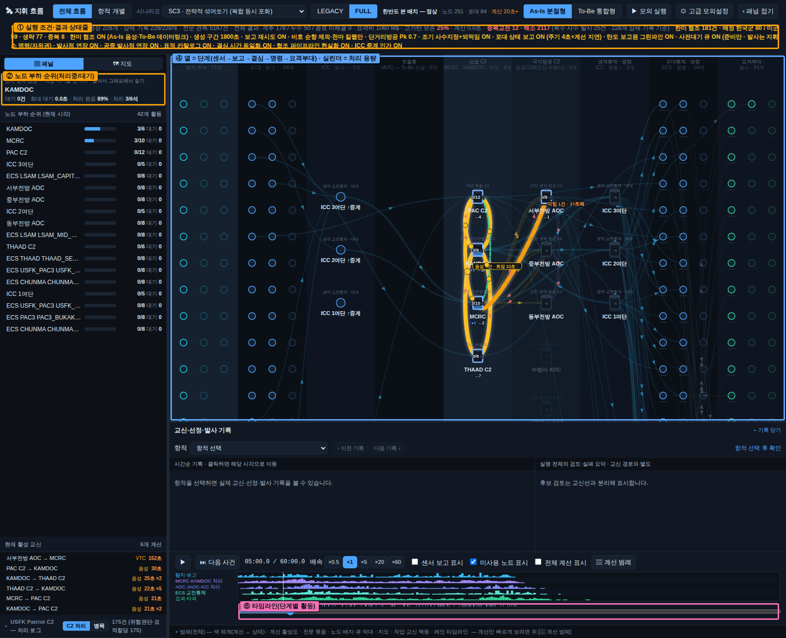
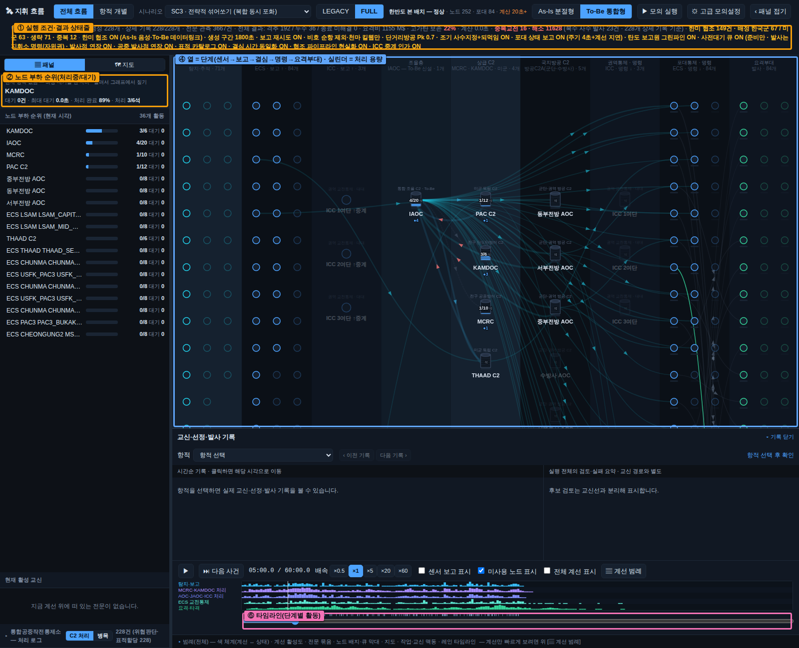
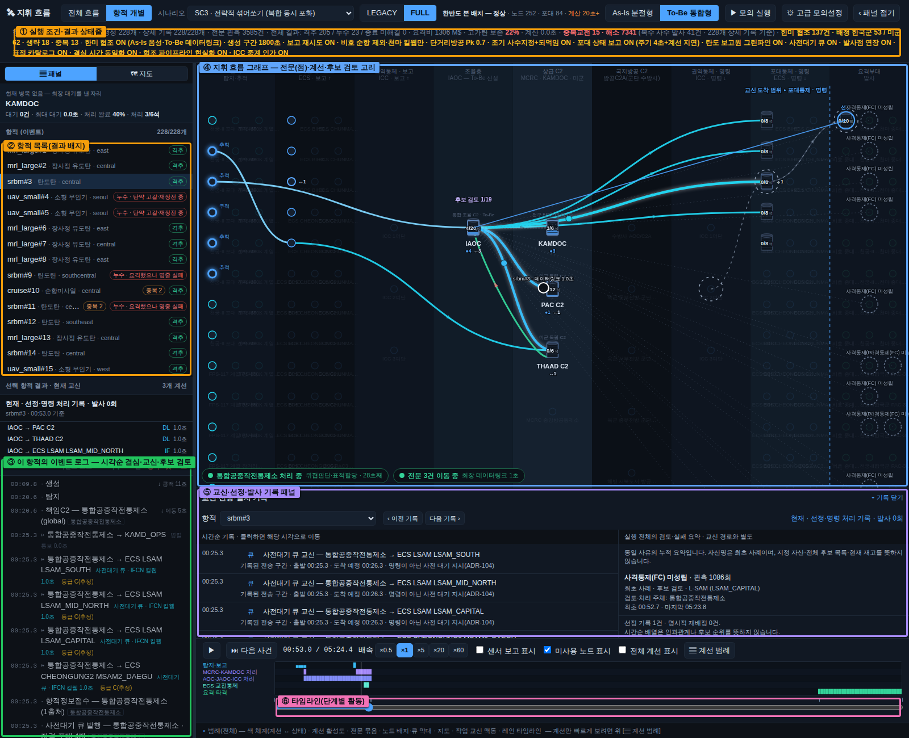
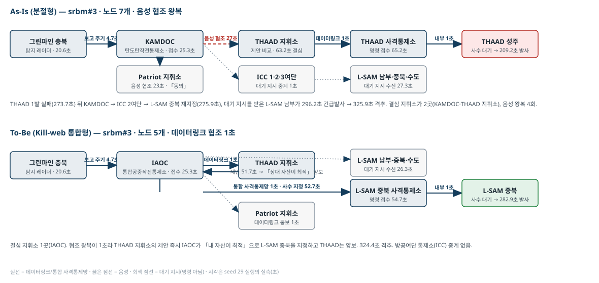
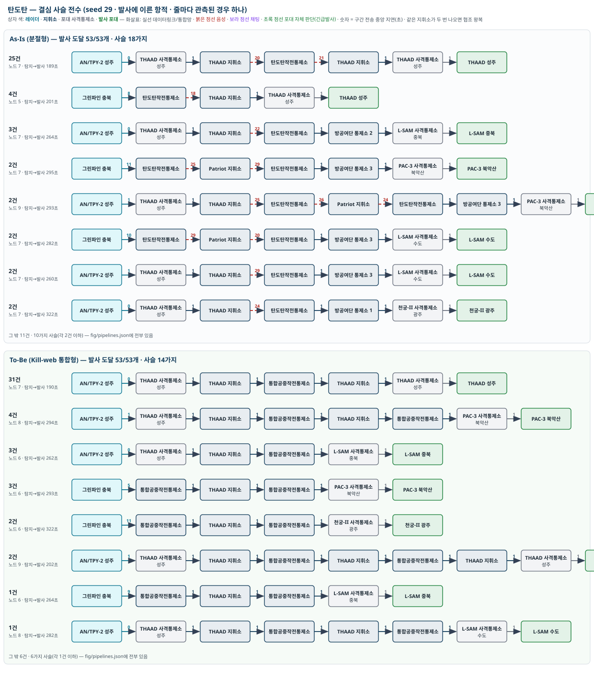
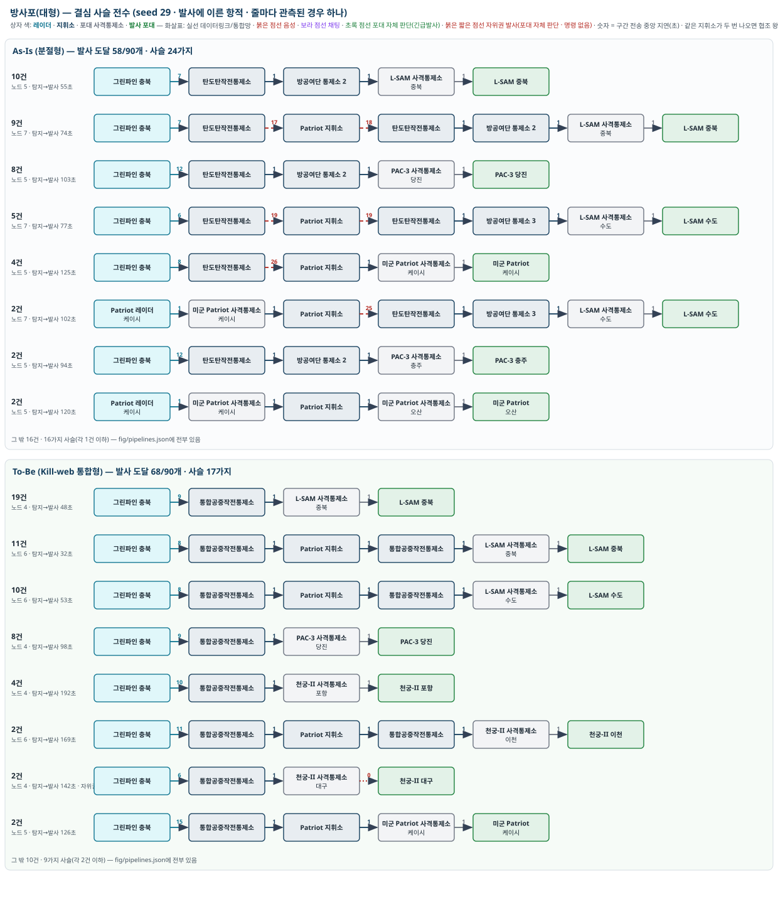
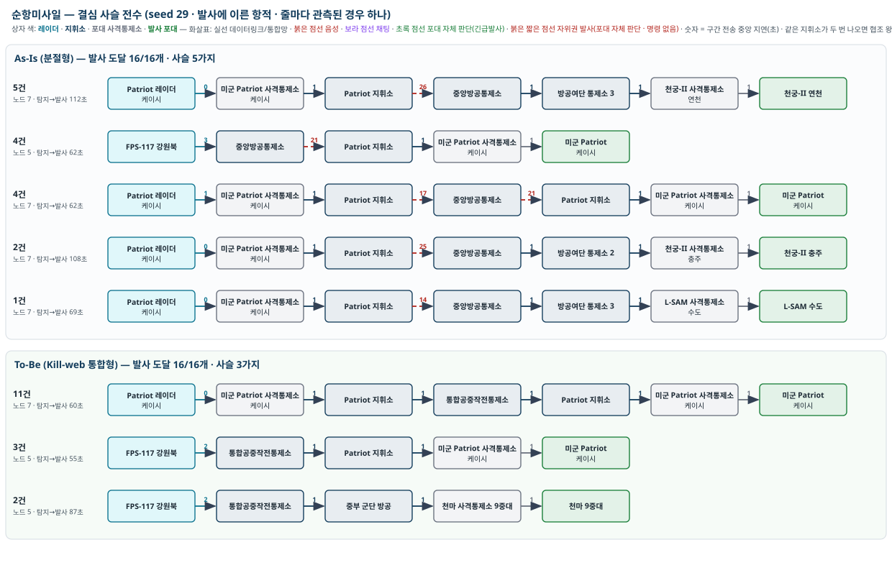
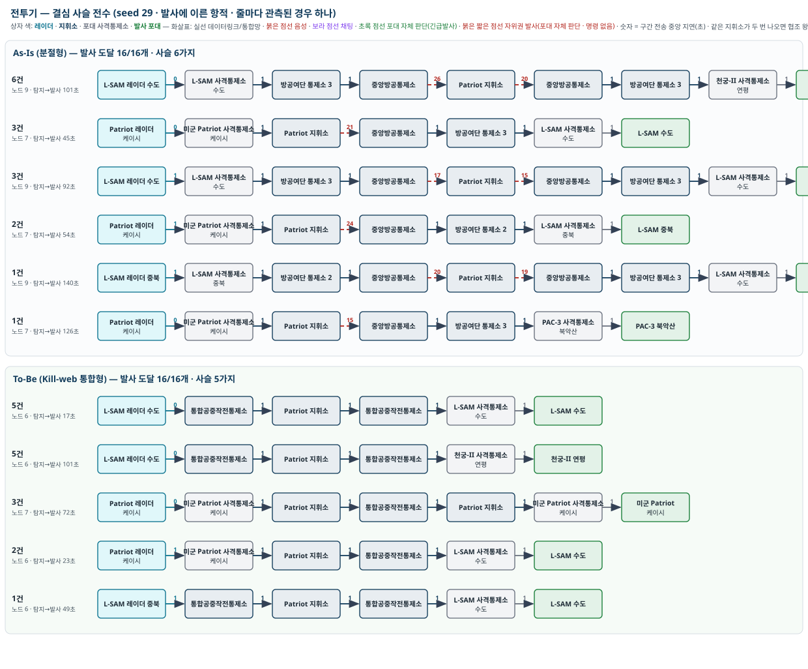
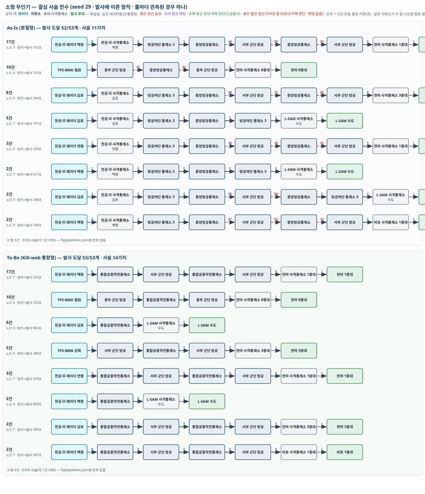

이 문서의 모든 수치는 공개자료 기반의 정책연구용 개념값이며 실제 작전자료가 아닙니다. 결과는 6장에 적은 가정을 전제로만 읽어야 합니다. 용어: As-Is = 현 체계, To-Be = Kill-web(킬웹) 체계. 실행 조건: SC3 복합 동시 포화 · 한반도 본 배치(지휘소 96 · 포대 84) · 강도 1배 · 위협 생성 1800초 · 관측 3600초 · seed 29(주 결과)와 30·31(재현성) · [지휘 흐름] 화면 기본 설정(포대 상태 보고 포함 — 결심 지휘소는 포대가 4초마다 올린 보고가 계선 지연만큼 늦게 닿은 상태로 후보를 가림 · 6장 13항). 생성 위협 228개(탄도탄 53 · 방사포 90 · 순항미사일 16 · 전투기 16 · 소형 무인기 53). 용어: 누수 = 요격 실패로 표적에 도달한 위협. 관측을 생성 구간보다 길게 두어 모든 위협이 격추 또는 누수로 끝났으므로(마지막 항적 종료 2310초) 미해결(관측 절단) 항적은 0입니다. 지휘소 이용률(5장·7장)은 위협이 들어오는 생성 구간 1800초 기준입니다. 개정 4판(2026-10-02): 포대 상태 보고 구조(결심 지휘소가 몇 초 전 포대 상태로 후보를 가림)를 기본 조건에 넣어 전 수치를 다시 산출했고, 9장에 지휘 흐름 화면에서 결심의 흐름이 어디에 보이는지를 캡처와 함께 적었습니다. 결심 규칙(항적 접수 시점의 조기 사수 지정 + 수행 불가 회신 되먹임)은 3판과 같습니다.
| 결론 | 자세히 |
|---|---|
| 격추 수는 As-Is와 To-Be가 비슷합니다(228개 중 211 대 205, seed 3개 평균 217 대 215 — 차이 −6·−1·0은 잡음 범위). 차이는 격추 수가 아니라 시간에 있습니다. 위협 하나를 격추하는 데 평균 195초 → 189초, seed 3개 모두 To-Be가 짧습니다(220 → 208, 210 → 202) | 3장 |
| 결심은 지휘소가 항적을 받은 직후에 납니다. 탐지 레이더 보고를 받은 결심 지휘소가 예상 요격 창과 포대 상황을 보고 사수를 미리 정합니다. 탄도탄의 「지휘소 접수 → 결심」은 As-Is 58초, To-Be 23초(한미 협조가 데이터링크). 대신 「결심 → 발사」에 사수 대기(포대가 쏠 수 있게 되기까지)가 들어가 탄도탄은 165~205초입니다. 발사·명중 시각은 두 체계가 같습니다 — 쏠 수 있는 물리 시점은 지휘 구조가 바꾸지 못합니다 | 1-0 · 3장 |
| 예측이 빗나가면 포대가 「수행 불가」를 회신하고 지휘소가 바로 재지정합니다. 되먹임이 없던 판(3판 이전 조건)에서는 잘못 정한 사수가 요격 창이 닫힐 때까지 기다려 To-Be 격추가 209까지 줄었고, 되먹임을 넣자 215로 회복됐습니다. 이번 판에서는 지휘소가 몇 초 전 포대 상태로 판단하므로 되먹임이 그 오차까지 받습니다(수행 불가 회신 As-Is 61건 · To-Be 22건) | 1-0 · 6장 |
| 거치는 노드 수는 To-Be에서 줄어듭니다. 소형 무인기 9 → 5, 순항미사일 7 → 5, 방사포 7 → 6, 전투기 7 → 6. 탄도탄은 7로 같습니다(THAAD 지휘소와의 협조 왕복이 두 체계에 다 남음) | 4장 |
| To-Be의 통합 지휘소에 병목은 생기지 않았습니다. 통합공중작전통제소 이용률 20%, 대기 0초. 병목은 포대에 있습니다. 84개 포대 중 54개는 한 발도 쏘지 않았고, 상위 3개 포대가 발사의 40~41%를 맡았으며 수도 L-SAM은 보유탄 24발을 두 번 다 썼습니다(재장전 포함 48·50발). 이 편중은 발사 간격·채널·보유탄 안에서 모델이 허용한 결과이지만, 15분 재장전·무한 재보급·1표적 1발 가정이 처리량을 넉넉하게 봅니다 | 5장 |
| THAAD가 탄도탄을 가장 많이 쏘는 이유는 우선권이 아니라 요격 가능 구간이 먼저 열리기 때문입니다(탄도탄 51·47개 격추 중 THAAD 36·41발). 미군 자산을 빼면 탄도탄 격추 51 → 38(As-Is)·47 → 40(To-Be), 결심 58 → 134초·23 → 110초. 미군이 없을 때 두 체계의 순서가 뒤집혀 To-Be가 앞섭니다(197 대 202) | 1장·5-4 |
| To-Be의 한미 협조를 데이터링크로 두면 결심·협조가 1초에 끝나지만, 군단 방공이 협조 고리 밖에 있어 순항미사일에서 미군 Patriot과 천마의 중복 발사 13건이 생깁니다. 모델 구조의 빈틈이며 6장에 적었습니다 | 5-2 · 6장 |
| As-Is와 To-Be의 차이가 작은 이유는 한 문장으로, 이 시나리오에서 결과를 정하는 것이 지휘 구조가 아니라 물리(요격 가능 구간)·포대 자원·같은 절차(대기 지시·한미 협조·조기 사수 지정과 되먹임) 이기 때문입니다 | 2장 |
위협이 탐지된 뒤 발사에 이르기까지 정보와 명령이 지나가는 노드를 위협 종류별로 정리했습니다. 실제 실행에서 나온 경로를 나올 수 있는 경우의 수로 묶은 것이며, 화살표 하나가 노드 하나를 건너는 것입니다.
용어. 탄도탄작전통제소(As-Is의 탄도탄 결심 지휘소), 중앙방공통제소(As-Is의 공중 위협 결심 지휘소), 통합공중작전통제소(To-Be에서 둘을 합친 결심 지휘소), 방공여단 통제소(As-Is에서 탄도탄작전통제소·중앙방공통제소와 포대 사이의 중계), 군단 방공 지휘소(저고도 위협을 맡는 육군 지휘소), 포대 사격통제소(포대의 명령 접수·발사 통제), 미군 THAAD 지휘소·Patriot 지휘소(미군 자산만 지휘). ⇄ 협조는 결심 지휘소가 상대 진영 지휘소에 「내 최적 사수」를 제안하고 회신을 받는 왕복입니다(As-Is 음성 · To-Be 데이터링크).
이 모델의 요격 절차는 다음 다섯 단계입니다. 핵심은 「결심 지휘소가 항적을 받은 시점에 사수를 정하고, 포대는 준비되는 순간 쏜다」는 점입니다.
이 구조 때문에 3장의 「지휘소 접수 → 결심」은 지휘소가 사수를 고르는 데 걸린 시간(예측 가능한 후보가 생길 때까지의 짧은 보류 포함)이고, 「결심 → 발사」가 포대가 쏠 수 있게 되기까지의 대기를 담습니다. 탄도탄은 THAAD가 고도 150 km 아래로 들어오는 시점까지, 소형 무인기는 천마 사거리 9 km에 들어올 때까지 기다립니다. 지휘 구조와 결심 규칙이 바뀌어도 이 대기는 바뀌지 않습니다.
| 경우 | As-Is | To-Be |
|---|---|---|
| ① 미군 THAAD가 쏘는 경우(가장 흔함) | AN/TPY-2 레이더 → THAAD 사격통제소 → THAAD 지휘소 ⇄ 음성 협조 탄도탄작전통제소 → THAAD 사격통제소 → THAAD 발사 | AN/TPY-2 → THAAD 사격통제소 → THAAD 지휘소 ⇄ 데이터링크 협조 통합공중작전통제소 → THAAD 사격통제소 → THAAD 발사 |
| ② 협조 결과 한국군이 쏘는 경우 | 위와 같되 탄도탄작전통제소가 「내 자산이 최적」으로 회신 → 방공여단 통제소 → PAC-3·L-SAM 사격통제소 → 발사 | 통합공중작전통제소가 「내 자산이 최적」으로 회신 → PAC-3·L-SAM 사격통제소 → 발사 |
| ③ 자위권 발사(협조 없이 발사) | 요격 창이 45초 미만으로 촉박하면 협조를 생략하고 THAAD 지휘소 → THAAD 사격통제소 → 발사 | 같음(데이터링크라 드묾) |
| ④ 한국군이 먼저 제안하고 THAAD가 「내 자산이 최적」으로 회신하는 경우 | 그린파인 → 탄도탄작전통제소 ⇄ 음성 협조 THAAD 지휘소 → THAAD 사격통제소 → THAAD 발사 | 그린파인 → 통합공중작전통제소 ⇄ 데이터링크 협조 THAAD 지휘소 → THAAD 사격통제소 → 발사 |
| ⑤ 한국군 상층 포대의 긴급발사 | 그린파인 → 탄도탄작전통제소 →(대기 지시) 방공여단 통제소 → L-SAM 사격통제소 → 포대가 자기 레이더로 준비되면 발사 | 그린파인 → 통합공중작전통제소 →(대기 지시) L-SAM 사격통제소 → 발사 |
왜 THAAD가 가장 많이 쏘는가. 「미군이 먼저 쏜다」는 규칙은 모델에 없습니다. THAAD 지휘소와 탄도탄작전통제소는 각자 자기 포대만 놓고 독립적으로 결심하고, 협조는 양쪽 후보의 점수를 비교할 뿐입니다. THAAD가 대부분을 맡는 이유는 요격 가능 구간이 먼저 열리기 때문입니다. THAAD는 고도 40~150 km·거리 200 km까지 쏠 수 있어 탄도탄이 정점을 지나 내려오기 시작하면 바로 후보가 되지만, L-SAM은 고도 40~60 km의 좁은 띠에서만 쏠 수 있어 하강 마지막 단계(발사 뒤 260초 무렵)에야 후보가 됩니다. 양쪽이 항적을 받은 직후에 예상 요격 창으로 점수를 비교하는데, 준비까지 남은 시간이 길수록 점수를 깎으므로 창이 먼저 열리는 THAAD가 뽑힙니다(9장의 srbm#3이 그 예: 탄도탄작전통제소가 중북 L-SAM을 제안했지만 THAAD 지휘소가 「내 자산이 최적」으로 회신). 확인 실험: THAAD와 그 레이더를 빼면 탄도탄 격추가 51 → 47개(As-Is)·47 → 42개(To-Be)로 줄고, 결심까지 평균 58초 → 148초·23 → 112초로 늦어지며, 남부 L-SAM(15·15발)·미군 Patriot 군산(14·11발)·수도 L-SAM이 그 몫을 나눠 맡습니다(5-4절).
| 경우 | As-Is | To-Be |
|---|---|---|
| ① 정식 명령 | 그린파인 → 탄도탄작전통제소 ⇄ 음성 협조 Patriot 지휘소 → 방공여단 통제소 → L-SAM 사격통제소 → L-SAM 발사 | 그린파인 → 통합공중작전통제소 ⇄ 데이터링크 협조 Patriot 지휘소 → L-SAM 사격통제소 → L-SAM 발사 |
| ② 협조 없이 바로 명령 | 그린파인 → 탄도탄작전통제소 → 방공여단 통제소 → PAC-3 사격통제소 → 발사 | 그린파인 → 통합공중작전통제소 → L-SAM·PAC-3 사격통제소 → 발사 |
| ③ 대기 지시 후 긴급발사(실제로는 이 경로가 대부분) | 그린파인 → 탄도탄작전통제소 →(대기 지시) 방공여단 통제소 → 포대 사격통제소 → 포대가 자기 레이더로 준비되면 발사 | 그린파인 → 통합공중작전통제소 →(대기 지시) 포대 사격통제소 → 발사 |
| ④ 미군 축 자체 처리 | Patriot 레이더 → Patriot 사격통제소 → Patriot 지휘소 → Patriot 사격통제소 → 발사 | 같음 |
방사포 90개 중 72~75개가 ③ 긴급발사로, 나머지가 ①·②·④의 사수 지정으로 발사됐습니다.
| 경우 | As-Is | To-Be |
|---|---|---|
| ① 한국군 천궁-II가 쏘는 경우 | Patriot 레이더 → Patriot 사격통제소 → Patriot 지휘소 ⇄ 음성 협조 중앙방공통제소 → 방공여단 통제소 → 천궁-II 사격통제소 → 발사 | Patriot 레이더 → Patriot 지휘소 ⇄ 데이터링크 협조 통합공중작전통제소 → 천궁-II 사격통제소 → 발사 |
| ② 미군 Patriot이 쏘는 경우 | L-SAM 레이더 → L-SAM 사격통제소 → 방공여단 통제소 → 중앙방공통제소 ⇄ 음성 협조 Patriot 지휘소 → Patriot 사격통제소 → 발사 | L-SAM 레이더 → 통합공중작전통제소 ⇄ 데이터링크 협조 Patriot 지휘소 → Patriot 사격통제소 → 발사 |
| ③ 천마가 근거리에서 쏘는 경우(To-Be만 · 가장 흔함) | 해당 없음 — As-Is에서는 군단 방공에 순항 항적이 내려오지 않음 | TPS-880K 레이더 → 군단 방공 지휘소 → 천마 사격통제소 → 천마 발사 · 또는 L-SAM 레이더 → 통합공중작전통제소 → 군단 방공 지휘소 → 천마 |
비호는 순항미사일 교전 대상이 아닙니다. 천마는 근거리 순항 요격이 가능하지만, As-Is에서는 비호와 같은 군단 방공 지휘소 아래 묶여 있고 순항 항적이 그 계통으로 내려오지 않으므로 쏘지 않습니다(사용자 가정). To-Be에서는 TPS-880K 항적이 군단 방공에 바로 닿아 천마가 16개 중 11개를 맡습니다. 다만 미군 Patriot 케이시도 순항미사일 14개에 쏘아 그중 13개가 천마와 겹치는 중복 발사가 생깁니다(5-2·6장 — 군단 방공은 한미 협조 고리 밖에 있고, 데이터링크 협조가 1초 만에 「동의」로 끝나 Patriot이 양보할 계기가 없음).
To-Be에서 저고도 위협의 결심 지휘소가 「군단 방공 지휘소」인 근거. 참조 모델(IADS codex)의 To-Be 설계는 자산을 세 개의 웹으로 나눕니다. 상층 웹(탄도탄작전통제소·중앙방공통제소 예하 L-SAM·천궁-II·PAC-3), 국지방공 웹(육군 국지방공 지휘소 예하 비호·천마와 TPS-880K 레이더 전부), 미군 웹(THAAD·Patriot). 「두뇌는 같고 신경망만 다르다」는 원칙에 따라 각 웹은 자기 안의 후보로 결심하며, 국지방공 웹의 결심 노드가 곧 군단 방공 지휘소입니다. 이 모델은 그 분류를 그대로 옮겼습니다.
| 경우 | As-Is | To-Be |
|---|---|---|
| ① 한국군 천궁-II가 쏘는 경우 | L-SAM 레이더 → 사격통제소 → 방공여단 통제소 → 중앙방공통제소 ⇄ 음성 협조 Patriot 지휘소 → 방공여단 통제소 → 천궁-II 사격통제소 → 발사 | L-SAM 레이더 → 통합공중작전통제소 ⇄ 데이터링크 협조 Patriot 지휘소 → 천궁-II 사격통제소 → 발사 · 협조가 없으면 L-SAM 레이더 → 통합공중작전통제소 → 천궁-II 사격통제소 → 발사 |
| ② 협조 결과 미군 Patriot이 쏘는 경우 | 중앙방공통제소 ⇄ 음성 협조 Patriot 지휘소 → Patriot 사격통제소 → 발사 | 통합공중작전통제소 → Patriot 지휘소 → Patriot 사격통제소 → 발사 |
| ③ L-SAM 대공탄으로 쏘는 경우 | 중앙방공통제소 → 방공여단 통제소 → L-SAM 사격통제소 → 발사 | 통합공중작전통제소 → L-SAM 사격통제소 → 발사 |
To-Be에서는 협조가 데이터링크라 왕복이 2초 안에 끝나, 협조가 붙어도 전투기 탐지→명중이 110 → 68초로 줄어듭니다(3장).
| 경우 | As-Is | To-Be |
|---|---|---|
| ① 군단 방공(천마·비호)이 쏘는 경우(가장 흔함) | 천궁-II 레이더 → 사격통제소 → 방공여단 통제소 → 중앙방공통제소 →(채팅으로 항적) 군단 방공 지휘소 →(음성으로 교전 요청) 중앙방공통제소 →(음성 승인) 군단 방공 지휘소 → 천마 사격통제소 → 발사 | 천궁-II 레이더 → 통합공중작전통제소 → 군단 방공 지휘소 → 천마 사격통제소 → 발사 |
| ② 저고도 레이더가 직접 본 경우 | 해당 없음 | TPS-880K 레이더 → 군단 방공 지휘소 → 천마·비호 사격통제소 → 발사 |
| ③ L-SAM 대공탄으로 쏘는 경우 | 레이더 → 방공여단 통제소 → 중앙방공통제소 → 방공여단 통제소 → L-SAM 사격통제소 → 발사 | 레이더 → 통합공중작전통제소 → L-SAM 사격통제소 → 발사 |
As-Is는 중앙방공통제소와 군단 방공 지휘소 사이를 두 번 오갑니다(채팅으로 항적을 주고, 음성으로 승인을 받음). To-Be는 한 번에 내려갑니다.
| 위협 | As-Is 결심 지휘소 | As-Is 거친 노드 수 | To-Be 결심 지휘소 | To-Be 거친 노드 수 |
|---|---|---|---|---|
| 탄도탄 | THAAD 지휘소(탄도탄작전통제소와 협조) | 7 | THAAD 지휘소(통합공중작전통제소와 협조) | 7 |
| 방사포 | 탄도탄작전통제소 | 7 | 통합공중작전통제소 | 6 |
| 순항미사일 | 중앙방공통제소(Patriot 지휘소와 협조) | 7 | 군단 방공 지휘소(천마) · 통합공중작전통제소 | 5 |
| 전투기 | 중앙방공통제소(Patriot 지휘소와 협조) | 7 | 통합공중작전통제소 | 6 |
| 소형 무인기 | 군단 방공 지휘소(중앙방공통제소 두 번 경유) | 9 | 군단 방공 지휘소 | 5 |
기본 설정에서 격추는 211 대 205(seed 3개 평균 217 대 215), 누수 17 대 23으로 비슷하고, 격추까지 평균 시간만 195초 → 189초로 다릅니다. 차이가 작은 이유를 원인별로 정리하면 다음과 같습니다.
| 원인 | 설명 | 근거 |
|---|---|---|
| ① 결과의 병목이 물리에 있다 | 탄도탄·방사포 143개(전체의 63%)의 발사 시각은 지휘 구조가 아니라 요격 가능 구간(THAAD 고도 40~150 km, L-SAM 40~60 km)이 열리는 시각이 정합니다. 결심을 미리 하더라도 포대는 그 시각까지 사수 대기합니다. 두 체계 모두 같은 포대·같은 물리를 쓰므로 탄도탄 탐지→명중 287초 대 281초, 방사포 107초 대 102초로 같습니다. | 1-0 · 3장 |
| ② 같은 절차가 두 체계에 다 들어 있다 | 대기 지시와 긴급발사(방사포의 5분의 4가 이 경로), 한미 협조(탄도탄의 90%에 붙음), 그린파인 직접 인지, 그리고 결심 규칙(사수를 미리 정하고 되먹임으로 바로잡음)은 As-Is와 To-Be에 똑같이 적용된 가정입니다. 지휘 구조의 차이가 드러날 자리를 이 절차들이 먼저 채웁니다. | 1-0 · 6장 |
| ③ 지휘소가 포화되지 않았다 | 강도 1배에서 가장 바쁜 탄도탄작전통제소 이용률이 0.49이고 통합공중작전통제소는 0.20입니다(위협이 들어오는 1800초 기준). To-Be의 장점(통합 인지·병렬 처리)은 지휘소가 포화될 때 드러나는데, 그 구간은 강도 3배 이상입니다(7장). | 5-1 · 7장 |
| ④ 포대 자원이 같다 | 84개 포대 중 54개가 한 발도 쏘지 않고, 상층 포대 3곳이 발사의 40~41%를 맡습니다. 수도 L-SAM은 두 체계 모두 48·50발(보유탄 24 + 재장전 24 이상)을 씁니다. 지휘 구조가 바뀌어도 쏠 수 있는 포대와 탄은 같습니다. | 5-2 |
| ⑤ 미군 축은 두 체계에서 같다 | THAAD·Patriot 지휘소는 두 체계 모두 독립 축이고, 협조 상대 지휘소와 매체(음성 → 데이터링크)만 바뀝니다. 탄도탄 51·47개 격추의 대부분(THAAD 36·41발)이 THAAD 몫이라 이 부분은 구조에 무관합니다. 미군을 빼면 두 체계의 순서가 뒤집혀 197 대 202로 To-Be가 앞섭니다(5-4) — 같은 미군 축이 구조 차이를 덮고 있다는 뜻입니다. | 1장 · 5-4 |
| ⑥ 차이가 나는 자리는 시간과 노드 수 | To-Be의 효과는 격추 수가 아니라 소형 무인기(결심 64 → 12초), 순항미사일(탐지→명중 59 → 22초), 전투기(탐지→명중 110 → 68초), 탄도탄 결심(58 → 23초), 격추까지 평균 195 → 189초, 노드 수 9 → 5에 있습니다. 강도 1배에서는 이 시간 이득이 격추 수로 바뀌기 전에 위협이 끝납니다. | 3장·4장 |
| ⑦ seed 잡음 | 격추 차이 ±6은 seed 하나의 잡음 범위입니다. seed 3개에서 −6·−1·0이며, 20개 비교 전에는 방향을 말할 수 없습니다. | 6장 |
정리하면, 이 시나리오·강도에서 두 체계의 차이를 격추 수로 보려 하면 보이지 않고, 시간·노드 수·지휘소 포화 시점(강도 3배 이상)·미군 축을 뺀 조건으로 봐야 보입니다.
위협 하나의 대응 과정을 다섯 구간으로 나눠 잰 뒤, 위협 종류별 평균을 냈습니다. 단위는 모두 초이고, n은 그 종류의 위협 수입니다(구간별로 실제 측정된 수는 다를 수 있음 — 예: 발사에 이르지 못한 위협은 「결심→발사」에 들어가지 않음).
붉은 글씨는 As-Is와 To-Be의 차이가 두드러진 칸(차이 15% 이상이면서 10초 이상)입니다. 원인은 표 아래에 정리했습니다.
| 위협 | n | 생성→탐지 | 탐지→지휘소 접수 | 지휘소 접수→결심 | 결심→발사 | 발사→명중 | 탐지→명중 |
|---|---|---|---|---|---|---|---|
| 탄도탄 | 53 | 9 | 7 | 58 | 168 | 53 | 287 |
| 방사포 | 90 | 3 | 15 | 40 | 10 | 44 | 107 |
| 순항미사일 | 16 | 0 | 2 | 26 | 17 | 14 | 59 |
| 전투기 | 16 | 0 | 1 | 41 | 29 | 38 | 110 |
| 소형 무인기 | 53 | 0 | 3 | 64 | 247 | 20 | 337 |
| 위협 | n | 생성→탐지 | 탐지→지휘소 접수 | 지휘소 접수→결심 | 결심→발사 | 발사→명중 | 탐지→명중 |
|---|---|---|---|---|---|---|---|
| 탄도탄 | 53 | 9 | 7 | 23 | 196 | 58 | 281 |
| 방사포 | 90 | 3 | 15 | 30 | 13 | 45 | 102 |
| 순항미사일 | 16 | 0 | 1 | 3 | 7 | 11 | 22 |
| 전투기 | 16 | 0 | 0 | 15 | 30 | 23 | 68 |
| 소형 무인기 | 53 | 0 | 1 | 12 | 308 | 18 | 346 |
전체 평균: 격추까지 195초 → 189초, 교전 시작까지 161초 → 153초. seed 30·31에서도 220 → 208초, 210 → 202초로 같은 방향입니다.
| 칸 | As-Is → To-Be | 원인의 종류 | 설명 |
|---|---|---|---|
| 탄도탄 · 지휘소 접수→결심, 결심→발사 | 58 → 23초, 168 → 196초 | 구조 설계(한미 협조 매체) | To-Be는 한미 협조가 데이터링크(1초)라 THAAD 지휘소와 통합공중작전통제소의 제안·회신이 바로 끝나 사수가 23초 만에 정해집니다. As-Is는 음성 왕복(평균 20초 × 2)이 들어갑니다. 그만큼 사수 대기(결심→발사)가 길어질 뿐 발사·명중 시각(탐지→명중 287 → 281초)은 같습니다 — 요격 창이 열리는 물리 시점은 바뀌지 않기 때문입니다. |
| 순항미사일 · 지휘소 접수→결심, 탐지→명중 | 26 → 3초, 59 → 22초 | 구조 설계 + 모의 가정 | To-Be에서는 TPS-880K 항적이 군단 방공에 바로 닿아 천마가 근거리에서 결심 3초·발사 7초 만에 쏩니다(16개 중 11개). As-Is는 미군 Patriot 지휘소 → 중앙방공통제소 음성 협조 → 방공여단 통제소를 거쳐 PAC-3·천궁-II가 쏩니다. 다만 「천마가 To-Be에서만 순항을 쏜다」는 것은 사용자 가정이므로 이 칸은 구조와 가정이 겹친 결과입니다. |
| 전투기 · 지휘소 접수→결심, 발사→명중, 탐지→명중 | 41 → 15초, 38 → 23초, 110 → 68초 | 구조 설계 | As-Is는 Patriot 지휘소의 음성 제안 → 중앙방공통제소 ⇄ Patriot 지휘소 음성 협조 → 방공여단 통제소를 거칩니다. To-Be는 데이터링크 협조로 제안·회신이 1초에 끝나고 통합공중작전통제소가 포대로 바로 내려보냅니다. 전투기는 요격 창이 넓어 결심이 빨라진 만큼 명중도 빨라집니다. 발사→명중이 38 → 23초로 준 것은 사수가 바뀌어서입니다 — As-Is는 김포·인천 천궁-II가 먼 요격점에, To-Be는 미군 Patriot 케이시(6발)와 인천 천궁-II가 가까운 요격점에 쏩니다. |
| 소형 무인기 · 지휘소 접수→결심, 결심→발사 | 64 → 12초, 247 → 308초 | 구조 설계(결심) + 모의 가정(물리)(대기) | As-Is는 중앙방공통제소 → 군단 방공(채팅) → 중앙방공통제소(음성 요청) → 군단 방공(음성 승인)의 이중 왕복이 있어 사수 지정이 50초 남짓 늦습니다. To-Be는 한 번에 내려갑니다. 결심이 빨라진 만큼 사수 대기가 늘어나고, 탐지→명중(337 → 346초)은 두 체계 모두 느린 표적이 천마 사거리(9 km)에 들어오기까지의 비행 시간이 정합니다. |
| 탄도탄 · 결심→발사 168~196초 | — | 모의 가정(물리) | 사수를 미리 정했지만 THAAD가 고도 150 km 아래로 들어올 때까지 사수 대기하는 시간입니다(1-0). 지휘 구조와 무관합니다. |
| 방사포 · 지휘소 접수→결심 | 40 → 30초 | 구조 설계 + 모의 가정 | 정식 명령으로 쏘는 방사포(90개 중 15~18개)에서 To-Be의 데이터링크 협조가 10초를 줄입니다. 나머지 5분의 4는 대기 지시 후 긴급발사라 두 체계가 같고, 격추 수 자체가 이 가정에 달려 있습니다(6장). |
| 방사포 · 발사 이후 | 거의 같음 | 모의 가정 | 방사포 5분의 4가 대기 지시 후 긴급발사로 처리되며, 이 절차는 두 체계에서 같습니다. 격추 수 자체가 이 가정에 달려 있습니다(6장). |
「거친 노드 수」는 발사에 이르는 정보·명령 사슬에서 정보나 명령이 지나간 노드의 개수입니다(레이더부터 발사대까지, 같은 노드를 두 번 지나면 두 번 셉니다). 레이더 → 사격통제소 → 지휘소 → … → 발사대까지 실제로 흐른 연결을 항적마다 거꾸로 추적해 셌고, 한미 협조 왕복이 사슬에 들어가면 포함했습니다. 발사에 이른 항적만 셌습니다.
| 위협 | As-Is 거친 노드 수(중앙값) | 그중 지휘소 수 | To-Be 거친 노드 수(중앙값) | 그중 지휘소 수 | 차이 |
|---|---|---|---|---|---|
| 탄도탄 | 7 | 2 | 7 | 2 | 없음 (THAAD 지휘소 ⇄ 결심 지휘소 협조 왕복이 두 체계에 다 남음) |
| 방사포 | 7 | 3 | 6 | 2 | −1 (방공여단 통제소 중계 제거) |
| 순항미사일 | 7 | 3 | 5 | 2 | −2 (천마 직접 교전) |
| 전투기 | 7 | 3 | 6 | 2 | −1 (방공여단 통제소 중계 제거) |
| 소형 무인기 | 9 | 3 | 5 | 2 | −4 (이중 왕복 제거) |
번호는 거친 노드의 순서이며 마지막 번호가 거친 노드 수입니다. 「⇄」는 협조 왕복(제안과 회신)이고, 되돌아온 지휘소는 다시 셉니다. 건수는 seed 29에서 발사에 이른 항적 수입니다.
탄도탄 · As-Is 7노드(30건) / 5노드(4건) ① AN/TPY-2 레이더 → ② THAAD 사격통제소 → ③ THAAD 지휘소 ⇄(음성) ④ 탄도탄작전통제소 → ⑤ THAAD 지휘소 → ⑥ THAAD 사격통제소 → ⑦ THAAD 발사대 · 한국군이 먼저 제안하는 경우 ① 그린파인 → ② 탄도탄작전통제소 ⇄ ③ THAAD 지휘소(「내 자산이 최적」) → ④ THAAD 사격통제소 → ⑤ THAAD 발사대 탄도탄 · To-Be 7노드(31건) / 5~6노드(6건) ① AN/TPY-2 레이더 → ② THAAD 사격통제소 → ③ THAAD 지휘소 ⇄(데이터링크) ④ 통합공중작전통제소 → ⑤ THAAD 지휘소 → ⑥ THAAD 사격통제소 → ⑦ THAAD 발사대 · 한국군이 쏘면 ① AN/TPY-2 → ② THAAD 사격통제소 → ③ THAAD 지휘소 →(제안) ④ 통합공중작전통제소 → ⑤ L-SAM 사격통제소 → ⑥ L-SAM 발사대
방사포 · As-Is 7노드(5건) / 5노드(6건) ① 그린파인 레이더 → ② 탄도탄작전통제소 ⇄(음성) ③ Patriot 지휘소 → ④ 탄도탄작전통제소 → ⑤ 방공여단 통제소 → ⑥ L-SAM 사격통제소 → ⑦ L-SAM 발사대 · 협조 결과 미군이 쏘면 ① 그린파인 → ② 탄도탄작전통제소 →(음성 제안) ③ Patriot 지휘소 → ④ Patriot 사격통제소 → ⑤ Patriot 케이시·오산 발사대 방사포 · To-Be 6노드(12건) / 4노드(2건) ① 그린파인 레이더 → ② 통합공중작전통제소 ⇄(데이터링크) ③ Patriot 지휘소 → ④ 통합공중작전통제소 → ⑤ L-SAM 사격통제소 → ⑥ L-SAM 발사대 · 협조가 없으면 ① 그린파인 → ② 통합공중작전통제소 → ③ L-SAM 사격통제소 → ④ 발사대
순항미사일 · As-Is 7노드(13건) ① Patriot 레이더 → ② Patriot 사격통제소 → ③ Patriot 지휘소 →(음성 제안) ④ 중앙방공통제소 → ⑤ 방공여단 통제소 → ⑥ PAC-3 북악산·천궁-II 연천 사격통제소 → ⑦ 발사대 순항미사일 · To-Be 4노드(천마 · 7건) / 5노드(3건) / 7노드(미군 Patriot 자체 · 4건) ① TPS-880K 철원 레이더 → ② 군단 방공 지휘소 → ③ 천마 사격통제소 → ④ 천마 발사 · 상층 레이더가 본 경우 ① L-SAM 레이더 → ② 통합공중작전통제소 → ③ 군단 방공 지휘소 → ④ 천마 사격통제소 → ⑤ 천마 발사
전투기 · As-Is 7노드(8건) / 9노드(5건) ① Patriot 레이더 → ② Patriot 사격통제소 → ③ Patriot 지휘소 →(음성 제안) ④ 중앙방공통제소 → ⑤ 방공여단 통제소 → ⑥ PAC-3 북악산 사격통제소 → ⑦ 발사대 · 한국군 레이더가 본 경우 ① L-SAM 레이더 → ② L-SAM 사격통제소 → ③ 방공여단 통제소 → ④ 중앙방공통제소 ⇄ ⑤ Patriot 지휘소 → ⑥ 중앙방공통제소 → ⑦ 방공여단 통제소 → ⑧ 천궁-II 인천 사격통제소 → ⑨ 발사대 전투기 · To-Be 7노드(6건) / 6노드(5건) ① Patriot 레이더 → ② Patriot 사격통제소 → ③ Patriot 지휘소 ⇄(데이터링크) ④ 통합공중작전통제소 → ⑤ Patriot 지휘소 → ⑥ Patriot 사격통제소 → ⑦ Patriot 발사대 · 한국군이 쏘면 ① L-SAM 레이더 → ② 통합공중작전통제소 ⇄ ③ Patriot 지휘소 → ④ 통합공중작전통제소 → ⑤ 천궁-II 인천 사격통제소 → ⑥ 발사대
소형 무인기 · As-Is 9노드(19건) ① 천궁-II 연평 레이더 → ② 천궁-II 사격통제소 → ③ 방공여단 통제소 → ④ 중앙방공통제소 →(채팅) ⑤ 군단 방공 지휘소 →(음성 요청) ⑥ 중앙방공통제소 →(음성 승인) ⑦ 군단 방공 지휘소 → ⑧ 천마 1중대 사격통제소 → ⑨ 천마 발사 소형 무인기 · To-Be 5노드(천궁-II 레이더가 본 경우 · 21건) / 4노드(TPS-880K가 본 경우 · 15건) ① 천궁-II 연평 레이더 → ② 통합공중작전통제소 → ③ 군단 방공 지휘소 → ④ 천마 1중대 사격통제소 → ⑤ 천마 발사 · 또는 ① TPS-880K 철원·강화 레이더 → ② 군단 방공 지휘소 → ③ 천마 사격통제소 → ④ 천마 발사
「이용률」은 지휘소 처리 창구가 바쁜 시간의 비율입니다(1.0이면 쉴 틈 없이 처리 중). 이 장과 7장의 이용률은 위협이 들어오는 생성 구간 1800초 기준입니다(관측 3600초 전체로 평균하면 절반으로 보이므로). 「최대 동시」는 한 번에 처리 중이거나 기다리던 항적 수, 「대기」는 항적이 창구를 기다린 평균 시간입니다.
| 지휘소 | As-Is 이용률 (도착 · 최대 동시 · 대기) | To-Be 이용률 (도착 · 최대 동시 · 대기) |
|---|---|---|
| 탄도탄작전통제소 | 0.49 (142 · 10 · 1.4초) | 0.48 (142 · 8 · 0.3초) |
| 중앙방공통제소 | 0.27 (125 · 8 · 0) | 0.16 (85 · 7 · 0) |
| 통합공중작전통제소 | — | 0.20 (227 · 15 · 0) |
| 방공여단 통제소(3개) | 0.12 이하 (108 · 5) | 거의 없음 |
| 미군 Patriot 지휘소 | 0.02 (168 · 4 · 0) | 0.03 (170 · 3 · 0) |
| 미군 THAAD 지휘소 | 0.02 (51) | 0.01 (51) |
| 군단 방공 지휘소(3개) | 0.02 이하 (93 이하) | 0.02 이하 (85 이하) |
| 항목 | As-Is | To-Be |
|---|---|---|
| 총 발사 | 281 | 290 |
| 발사한 포대 / 전체 | 30 / 84 | 30 / 84 |
| 한 발도 안 쏜 포대 | 54 | 54 |
| 상위 3개 포대 발사 비중 | 40% | 41% |
| 최다 발사 | 수도 L-SAM 48 · THAAD 성주 36 · 중북 L-SAM 27 · 천마 1중대 25 · PAC-3 북악산 25 | 수도 L-SAM 50 · THAAD 성주 41 · 중북 L-SAM 28 · 천마 1중대 24 · 천마 8중대 23 · 미군 Patriot 케이시 22 |
| 동시교전 채널 초과로 거절된 요청 | 0건 | 0건 |
| 남부 포대(안동·대구·부산·울산·포항 등) | 거의 없음 | 남부 L-SAM 8발 외 없음 |
모델이 각 포대에 두는 자원과 상위 포대의 실제 발사 양상(seed 29 · As-Is)은 다음과 같습니다.
| 포대 | 보유탄(발사대 × 발사대당) | 동시교전 채널 | 재장전 | 발사 | 첫 발사 → 마지막 발사 | 최대 발사율(1분 / 10분) | 관측 종료 시 잔탄 |
|---|---|---|---|---|---|---|---|
| 수도 L-SAM | 24 (4 × 6 · 대탄도 12 + 대공 12 합산) | 10 | 발사대가 비면 900초 뒤 다시 6발 | 48 | 37초 → 1775초(29분) | 7 / 24 | 24(재장전 완료) |
| THAAD 성주 | 48 (6 × 8) | 6 | 발사대가 비면 900초 뒤 다시 8발 | 36 | 209초 → 2031초(30분) | 4 / 15 | 12 |
| 중북 L-SAM | 24 (4 × 6) | 10 | 같음 | 27 | 34초 → 1831초(30분) | 4 / 18 | 21 |
| PAC-3 북악산 | 72 (6 × 12) | 9 | 같음 | 25 | 213초 → 1720초 | 4 / 12 | 47 |
| 천마 1중대 | 48 (6 × 8) | 48 | 같음 | 25 | 526초 → 2099초 | 6 / 17 | 23 |
가장 많이 쓰인 연결은 As-Is의 탄도탄작전통제소 → 방공여단 통제소 대기 지시(438·357·219건)와 방공여단 통제소 → 중앙방공통제소 협조(231건), 방공여단 통제소 → L-SAM 대기 지시(187·161건)입니다. To-Be에서는 통합공중작전통제소 → L-SAM 명령·대기 지시(163·149건), 그린파인 충북 → 통합공중작전통제소 보고(140건), 군단 방공 → 통합공중작전통제소 교전 현황(135건), 통합공중작전통제소 → 미군 Patriot 지휘소 데이터링크 협조(131건)입니다. 협조가 항적 접수 직후에 모든 탄도 항적에 붙으므로 한미 협조 통행량이 가장 많은 연결에 듭니다. 통신 병목 판정은 없습니다. 대기 지시는 지휘소 처리 창구를 쓰지 않으므로 지휘소 이용률에는 들어가지 않습니다.
THAAD·미군 Patriot과 그 레이더(AN/TPY-2·미군 Patriot 레이더)를 배치에서 뺀 채 같은 조건으로 돌렸습니다(seed 29 · 생성 1800초 · 관측 3600초). 비교를 위해 THAAD만 뺀 경우도 함께 적습니다.
전체 결과
| 조건 | 격추/누수(228개 중) | 발사 | 격추까지 평균 | 발사한 포대 | 탄 소진 누수 |
|---|---|---|---|---|---|
| 미군 포함 · As-Is | 211 / 17 | 281 | 195초 | 30 / 84 | 5 |
| 미군 포함 · To-Be | 205 / 23 | 290 | 189초 | 30 / 84 | 5 |
| 미군 제외 · As-Is | 197 / 31 | 261 | 192초 | 28 / 78 | 10 |
| 미군 제외 · To-Be | 202 / 26 | 267 | 193초 | 28 / 78 | 8 |
| THAAD만 제외 · As-Is | 204 / 24 | 269 | 195초 | 32 / 83 | 6 |
| THAAD만 제외 · To-Be | 208 / 20 | 281 | 192초 | 30 / 83 | 4 |
위협별 격추(미군 포함 → 미군 제외)
| 위협 | As-Is | To-Be |
|---|---|---|
| 탄도탄(53) | 51 → 38 | 47 → 40 |
| 방사포(90) | 87 → 89 | 84 → 87 |
| 순항미사일(16) | 16 → 15 | 16 → 16 |
| 전투기(16) | 16 → 13 | 15 → 14 |
| 소형 무인기(53) | 41 → 42 | 43 → 45 |
탄도탄 시간(평균 · 초)
| 조건 | 지휘소 접수→결심 | 결심→발사 | 탐지→명중 | 탄도탄 사수 |
|---|---|---|---|---|
| 미군 포함 · As-Is | 58 | 168 | 287 | THAAD 36 · PAC-3 북악산 5 · 수도 L-SAM 5 |
| 미군 포함 · To-Be | 23 | 196 | 281 | THAAD 41 · PAC-3 북악산 7 · 중북 L-SAM 4 |
| 미군 제외 · As-Is | 134 | 138 | 317 | 남부 L-SAM 17 · 중북 L-SAM 7 · 수도 L-SAM 6 |
| 미군 제외 · To-Be | 110 | 164 | 317 | 남부 L-SAM 14 · 수도 L-SAM 10 · 중북 L-SAM 6 |
| THAAD만 제외 · As-Is | 148 | 131 | 319 | 남부 L-SAM 15 · 미군 Patriot 군산 14 · 수도 L-SAM 7 |
| THAAD만 제외 · To-Be | 112 | 164 | 316 | 남부 L-SAM 15 · 미군 Patriot 군산 11 · 수도 L-SAM 9 |
5-1의 「지휘소는 병목이 아니다」가 지휘소 용량이 충분해서인지 확인하기 위해, As-Is의 탄도탄작전통제소(창구 6 · 대기실 60)와 중앙방공통제소(창구 10 · 대기실 100)의 창구와 대기실을 극단적으로 줄여 봤습니다(seed 29 · 생성 1800초 · 관측 3600초). 「창구」는 동시에 처리할 수 있는 항적 수, 「대기실」은 처리를 기다리며 서 있을 수 있는 항적 수이고, 대기실이 차면 새 항적은 버려집니다(드롭). 이용률은 생성 구간 1800초 기준입니다.
| 조건 | 강도 | 격추/누수 | 지휘소 드롭(탄도탄작전통제소 · 중앙방공통제소) | 이용률 · 평균 대기 | 요격 창이 닫힌 뒤에야 처리된 누수 | 결심 평균 |
|---|---|---|---|---|---|---|
| 기준(창구 6·10) | 1배 | 211 / 17 | 0 · 0 | 0.49 · 1.4초 / 0.27 · 0 | 0 | 49초 |
| 창구 2 · 대기실 6 | 1배 | 202 / 26 | 44 · 36 | 0.94 · 21초 / 0.92 · 33초 | 10 | 59초 |
| 창구 1 · 대기실 2 | 1배 | 183 / 45 | 86 · 88 | 0.90 · 19초 / 1.00 · 20초 | 25 | 57초 |
| 창구 1 · 대기실 1 | 1배 | 189 / 39 | 107 · 93 | 0.74 · 0 / 0.76 · 0 | 28 | 55초 |
| 기준(창구 6·10) | 3배 | 609 / 65 | 0 · 0 | 1.00 · 19초 / 0.78 · 3.8초 | 0 | 88초 |
| 창구 2 · 대기실 6 | 3배 | 519 / 155 | 288 · 291 | 1.00 · 28초 / 1.00 · 66초 | 88 | 104초 |
| 창구 1 · 대기실 2 | 3배 | 502 / 172 | 354 · 341 | 1.00 · 23초 / 1.00 · 34초 | 113 | 84초 |
「일부 포대만 쏘는 이유」를 강도 1·3·5배로 확인했습니다(As-Is · seed 29 · 생성 1800초 · 관측 3600초 · 이용률은 생성 구간 기준).
| 조건 | 생성 | 격추/누수 | 발사한 포대 | 0발 포대 | 상위 3개 비중 | 채널 초과로 거절 | 탄 소진 누수 | 탄도탄작전통제소 이용률 |
|---|---|---|---|---|---|---|---|---|
| 1배 | 228 | 211 / 17 | 30 / 84 | 54 | 40% | 0 | 5 | 0.49 |
| 3배 | 674 | 609 / 65 | 41 / 84 | 43 | 26% | 2,497 | 20 | 1.0 |
| 5배 | 1,150 | 947 / 203 | 43 / 84 | 41 | 23% | 8,665 | 106 | 1.0 |
| 5배 To-Be | 1,150 | 1,012 / 138 | 45 / 84 | 39 | 20% | 15,371 | 50 | 1.0 (통합공중작전통제소 1.0) |
scripts/import-params-xlsx.mjs로 가져오면 엔진에 얹어 돌릴 수 있습니다(부록 A).이 장은 본문의 수치(3장 시간 · 4장 경로 · 5장 부하)가 지휘 흐름 화면(K-JAMDS_지휘흐름_단일본.html)의 어느 자리에서 나오는지를, 실제 실행 캡처에 번호를 붙여 보입니다. 예시 항적은 srbm#3(중부 축선 북쪽에서 발사된 탄도탄 · 대구 조준점 · 9.8초 생성)이며, 두 체계 모두 seed 29·생성 1800초·관측 3600초 실행에서 같은 위협입니다.

| 번호 | 자리 | 무엇이 보이나 | 본문의 어느 수치인가 |
|---|---|---|---|
| ① | 실행 조건·결과 상태줄 | 배치·격추/누수·켜진 규칙(한미 협조 매체, 조기 사수 지정+되먹임, 포대 상태 보고, 대기 지시) | 조건(머리말) · 6장 가정 |
| ② | 항적 목록 | 항적마다 결과 배지(격추·누수 사유·중복 발사). 클릭하면 그 항적의 흐름만 남는다 | 5-2 누수 원인 |
| ③ | 이벤트 로그 | 그 항적의 사건을 시각순으로 — 탐지, 지휘소 접수, 후보 검토(가능 n/m · 탈락 사유 · C2가 본 상태 나이), 사수 지정, 협조 요청·회신, 사수 대기, 발사, 명중. 줄 사이의 빈 시간에 「무엇을 기다렸나」가 붙는다 | 3장 단계별 시간 · 1-0 결심 구조 |
| ④ | 지휘 흐름 그래프 | 열이 단계(센서 → 포대 보고 → 권역 통제 → 결심 지휘소 → 국지방공·미군 → 권역 명령 → 포대통제 → 요격부대)이고, 점 하나가 전문 한 건이다. 실선은 데이터링크, 주황 점선은 음성, 빈 점선 원은 대기 지시. 결심 시각에는 지휘소에서 검토 포대로 보라 점선과 고리(가능·탈락·선정)가 뜬다 | 4장 경로(거친 노드 수) · 1장 대표 경로 |
| ⑤ | 교신·선정·발사 기록 패널 | 전문의 출발·도착 시각, 선정·명령 발령·접수 기록, 후보 검토 행을 표로. 오른쪽은 같은 사유의 누적(예: 사격통제 미성립 627회) | 4-2 대표 사슬 · 1-0 ⑤ 수행 불가 회신 |
| ⑥ | 타임라인 | 단계(탐지·보고 / 지휘소 처리 / 교전통제 / 요격·타격)별 활동을 시간축에 — 어느 단계가 비어 있고 어느 단계가 밀리는지 | 5-1 지휘소 이용률 · 3장 결심→발사 대기 |
전체 흐름 보기(항적을 고르지 않은 상태)에서는 ④의 각 노드가 실린더로 그려져 처리 중/용량과 대기 줄이 보이고, ②의 자리에 노드 부하 순위가 뜹니다. 5-1의 이용률과 5-2의 포대 편중은 이 보기에서 읽은 것입니다.




상황. 중부 축선 북쪽에서 탄도탄 한 발(srbm#3)이 대구 방향으로 날아옵니다. 그린파인 충북이 20.6초에 잡고, 4.7초 뒤 결심 지휘소(As-Is 탄도탄작전통제소 · To-Be 통합공중작전통제소)가 항적을 받습니다. 두 체계 모두 받은 즉시 요격 창이 있는 상층 포대 4곳(남부·중북·수도 L-SAM · 대구 천궁-II)에 대기 지시를 내립니다. 여기까지는 같습니다. 다음부터가 다릅니다.
| 지표 | As-Is (분절형) | To-Be (Kill-web 통합형) |
|---|---|---|
| ① 시간 — 접수 → 사수 지정 | 25.3 → 63.2초 = 38초 (탄도탄작전통제소 식별 35.9초 · 음성 협조 요청 → THAAD 지휘소 회신 「내 자산이 최적」 63.2초) | 25.3 → 52.7초 = 27초 (THAAD 지휘소 제안 51.7초 → 데이터링크 1초 → 통합공중작전통제소 「내 자산이 최적」 52.7초) |
| 시간 — 사수 지정 → 발사 | 146초 사수 대기 → THAAD 209.2초 발사 · 273.7초 빗나감 · 재지정 275.9초 · 남부 L-SAM 긴급발사 296.2초 | 230초 사수 대기 → 중북 L-SAM 282.9초 발사 |
| 시간 — 결말 | 325.9초 격추 (2발) | 324.4초 격추 (1발) |
| ② 경로 — 결심에 관여한 노드 | 7개 노드: 그린파인 충북 → 탄도탄작전통제소 ⇄(음성 27초) THAAD 지휘소 → THAAD 사격통제소 → THAAD 성주. 따로 Patriot 지휘소(음성 23초, 「동의」)와 방공여단 통제소 1·2·3여단(대기 지시 중계)이 붙어 교신에 든 노드는 11개 | 5개 노드: 그린파인 충북 → 통합공중작전통제소 ⇄(데이터링크 1초) THAAD 지휘소 → 중북 L-SAM 사격통제소 → 중북 L-SAM. 따로 Patriot 지휘소(데이터링크 통보)와 탄도탄작전통제소(도메인 처리)가 붙어 교신에 든 노드는 8개 |
| 경로 — 매체 | 보고 주기 → 데이터링크(대기 지시) → 음성 4회 왕복(23~28초씩) → 데이터링크 → 내부 | 보고 주기 → 통합 사격통제망(대기 지시) → 데이터링크 1초 → 통합 사격통제망 1초 → 내부. 음성 없음 |
| ③ 부하 — 결심 지휘소 | 탄도탄작전통제소 창구 3/6 처리 중(이용률 0.49), 음성 협조 전문 4건이 20~28초씩 계선에 머묾 | 통합공중작전통제소 창구 4/20 처리 중(이용률 0.20), 협조 전문 3건이 1초씩 |
| 부하 — 포대 | 대기 지시를 받은 4곳 중 처음 쏠 수 있던 포대 0/4(사격통제 미성립 · 627회 검토), THAAD 1/1 | 대기 지시 4곳 0/4(1,086회 검토), 통합공중작전통제소가 19곳 중 1곳(중북 L-SAM) 가능으로 판정 |
읽는 법. 시간은 ③ 로그의 「지휘소 접수」 줄과 「사수 지정」 줄의 간격, 그 뒤 「사수 대기」가 「발사」까지 덮은 길이입니다. 경로는 ④ 그래프에서 이 항적의 전문이 지난 노드를 세면 되고(⑤ 패널의 교신 행이 같은 것을 표로 보여줍니다), 부하는 ④의 실린더(처리 중/용량)와 전체 흐름 보기의 노드 부하 순위입니다. 관여 노드 수가 「동적」이라는 뜻은 이 예처럼 같은 탄도탄이라도 어느 레이더가 먼저 보았는지, 협조 상대가 몇이었는지, 첫 사수가 빗나갔는지에 따라 사슬이 달라지기 때문입니다 — 4-1의 중앙값 7·7은 그 분포의 가운데이고, 4-2에 경우의 수를 적었습니다.
srbm#3은 한 항적의 이야기입니다. 아래 다섯 그림은 seed 29 실행에서 발사에 이른 모든 항적의 결심 사슬을 유형별로 묶은 것입니다. 사슬은 발사 포대에 닿은 마지막 전문에서 전임 전문을 거꾸로 이어 만들었고(4장과 같은 방법), 긴급발사(대기 지시만 받고 포대가 스스로 쏜 경우)는 대기 지시가 닿은 포대 사격통제소까지를 사슬로 잡고 「포대 자체 판단」 한 칸(초록 점선)을 덧붙였습니다. 줄마다 관측된 경우 하나이고, 왼쪽에 건수·노드 수·탐지→발사 중앙값, 화살표 위에 그 구간의 전송 중앙 지연(초)을 적었습니다. 같은 지휘소가 두 번 나오면 협조 왕복(제안 → 회신)입니다. 건수가 적은 사슬은 그림에서 접었고 전부는 fig/pipelines.json에 있습니다(재생성: node docs/analysis/2026-09-29-moe-analysis/pipelines.mjs → python3 docs/analysis/2026-09-29-moe-analysis/pipelines-svg.py).





읽는 법. 각 그림의 위 블록(As-Is)과 아래 블록(To-Be)에서 같은 레이더·같은 포대로 끝나는 줄을 찾아 가운데 지휘소 칸의 수와 화살표 색을 비교하면, 4-1의 「거친 노드 수」 차이와 3장의 「접수 → 결심」 차이가 어느 칸에서 생기는지 보입니다. 붉은 점선(음성)과 보라 점선(채팅)이 As-Is에만 있고, To-Be의 모든 화살표는 1초 안팎입니다. 어느 레이더가 먼저 보았는지(AN/TPY-2 대 그린파인, 천궁-II 레이더 대 TPS-880K)와 어느 포대가 뽑혔는지(THAAD·L-SAM·PAC-3·천궁-II·천마·비호)에 따라 사슬이 달라지므로, 「탄도탄은 7노드」 같은 한 숫자는 이 분포의 중앙값입니다.
| As-Is (분절형) | To-Be (Kill-web 통합형) | |
|---|---|---|
| 결심 지휘소 | 탄도탄작전통제소(탄도탄·방사포) · 중앙방공통제소(공중 위협) · 군단 방공(저고도, 중앙방공통제소 승인 필요) | 통합공중작전통제소 하나 + 군단 방공(저고도, 자기 웹 안에서 결심) |
| 중계 | 방공여단 통제소가 명령·대기 지시를 포대로 중계(평균 9초 재검증 · 인가) | 없음 — 통합 사격통제망으로 포대 사격통제소에 직접 |
| 한미 협조 | 음성(평균 20초 왕복) | 데이터링크(1초) |
| 포대 상태 | 4초 보고 + 계선 지연 | 같음 |
| 거친 노드 수(중앙값) | 탄도탄 7 · 방사포 7 · 순항 7 · 전투기 7 · 소형 무인기 9 | 7 · 6 · 5 · 6 · 5 |
| 접수→결심(평균) | 탄도탄 58 · 방사포 40 · 순항 26 · 전투기 41 · 소형 무인기 64초 | 23 · 30 · 3 · 15 · 12초 |
| 결심 지휘소 이용률(강도 1배) | 0.49 / 0.27 | 0.48(탄도탄작전통제소) / 0.20(통합공중작전통제소) |
| 격추(seed 29 / 3개 평균) | 211 / 217 | 205 / 215 |
결론은 본문과 같습니다. 이 시나리오·강도에서 두 구조의 차이는 격추 수가 아니라 결심까지의 시간과 거치는 노드 수에 있고, 그 차이는 ③ 로그의 간격과 ④ 그래프의 음성 점선 유무로 화면에서 바로 읽힙니다. 요격 자체는 요격 창과 포대 자원이 정합니다.
K-JAMDS_파라미터.xlsx)이 결과서의 수치가 어떤 설정에서 나왔는지 확인하려면 저장소 루트의 K-JAMDS_파라미터.xlsx를 엽니다. 현행 소스의 카탈로그를 그대로 뽑은 참조본이며, 고친 셀은 가져오기로 엔진에 얹을 수 있습니다(화면·단일본은 미적용).
| 시트 | 무엇을 보나 | 이 결과서와의 관계 |
|---|---|---|
| 안내 | 내보낸 날짜·소스 버전, 좌표 순서([위도, 경도]) | 수치를 인용할 때 「어느 버전의 값인지」 확인 |
| 기본설정 | 화면 기본값과 엔진 기본값, 소스 파일 해시 | 이 결과서의 「켜 둔 가정」이 여기의 화면 설정 행(bsrc·cue·coal·rr·nocm·shpk 등 = 1)입니다. 엔진 기본값은 0이라 화면에서만 켜진 것을 알 수 있습니다 |
| 아군자산_FULL | 본 배치 노드 전부(지휘소·레이더·포대·사격통제소)의 좌표·소속·상급 지휘소·실효 제원 | 5장의 포대 편중을 지도와 대조하거나, 어느 포대가 어느 지휘소 아래인지 찾을 때. 가져오기에서 좌표·탄약·채널·탐지거리·지휘소 창구를 고치는 시트 |
| 자산제원_센서 · 자산제원_포대 · 자산제원_C2 | 레이더 탐지 성능·보고 주기, 포대 사거리·고도·탄수·채널, 지휘소 처리 창구 수·처리 시간 | 1장의 「THAAD가 먼저 쏘는 이유」(고도 40~150 km 대 L-SAM 40~60 km), 5장의 탄 소진·채널 수·지휘소 창구 수의 근거. 가져오기에서 유형 단위 제원을 고치는 시트 |
| 위협제원 · 공격경로 · 조준점 · 시나리오 | 위협 속도·고도·체공, 축선별 거리, 조준점, 시나리오별 도착률 | 5장의 포대 편중이 시나리오 구조에서 온다는 것을 확인 |
| 통신계선_FULL | 노드 사이 연결 전부 — 종류, As-Is/To-Be 매체·지연·분포, 채널 수, 근거 | 4장 사슬의 매체와 3장의 음성 왕복 20초의 근거. 가져오기에서 매체·지연을 고치는 시트 |
node scripts/import-params-xlsx.mjs 고친.xlsx --out my_overlay.json → node scripts/run-with-overlay.mjs my_overlay.json. 실제 위치·제원이 든 통합문서와 overlay JSON은 저장소에 커밋하지 않습니다.node scripts/export-params-xlsx.mjs(기존 서식 보존) 또는 --lite(서식 없이 재생성).moe-report.json — 본문 전 수치의 원본(주 결과: seed 29 두 체계 전 항목 · seed 30·31 · 가정별 보조 실행 · 생성 1800초 · 관측 3600초)probe.mjs — 재생성 스크립트(저장소 루트에서 node docs/analysis/2026-09-29-moe-analysis/probe.mjs)fig/ — 9장 캡처(지휘 흐름 단일본을 헤드리스 Chrome으로 실행해 찍은 PNG · 번호 표식은 화면 요소의 실제 위치에 덧씌움)와 결심 사슬 SVG(srbm#3 · 유형별 전수)pipelines.mjs → fig/pipelines.json — 유형별 결심 사슬 전수(노드 id·이름·종류·매체·구간 중앙 지연·건수·긴급발사 수·예시 항적) · pipelines-svg.py — 그 JSON을 fig/pipeline-<유형>.svg로 그림render-pdf.mjs — README.md → report.html → 저장소 루트 K-JAMDS_효과척도_분석결과서.pdf(A4). 실행: node docs/analysis/2026-09-29-moe-analysis/render-pdf.mjs